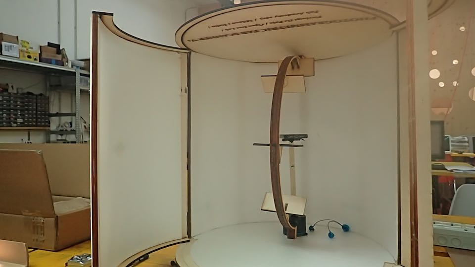
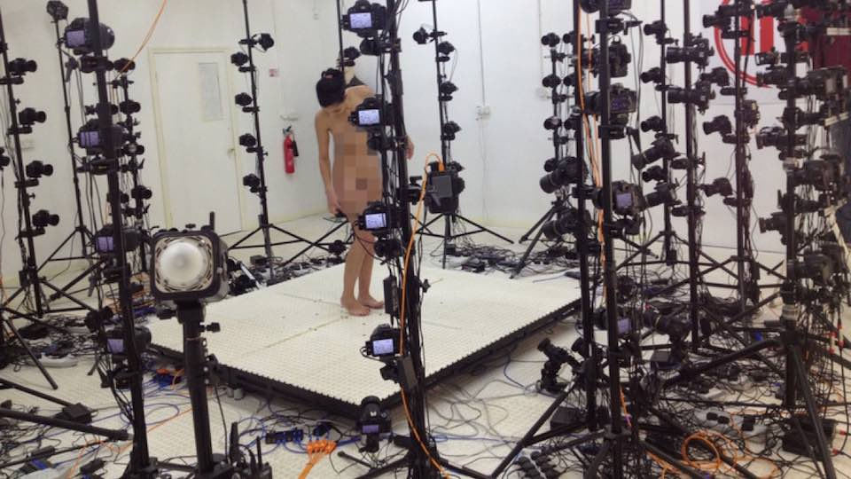
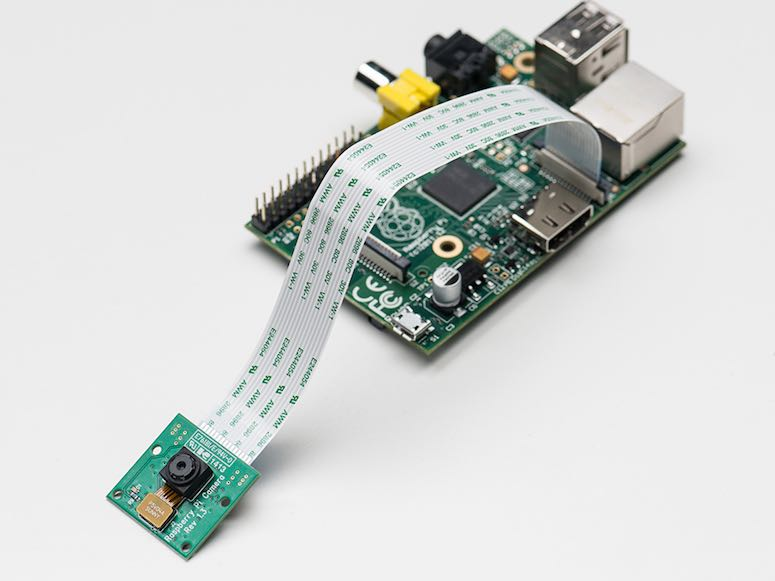
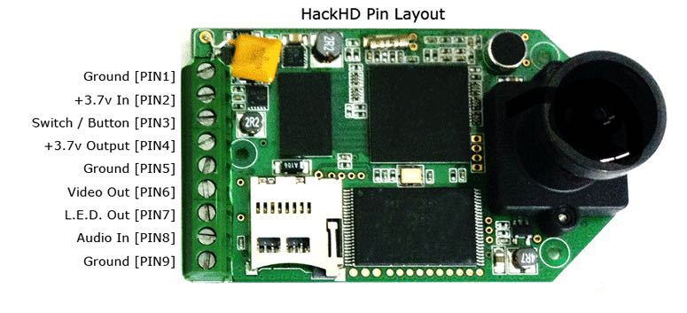

****************************************************************************************************************
*****************************************************************************************************************
The Photogrammetric Fab-Scanner is a cylindrical box, whit 50 cm of diameter.
It's composed from 3 different parts, that work in direct relationship :
- A - The Light Box
- B - The Motorized Stepper Dish
- C - The Motorized Camera Curved Rail
One time that box closed, the process start: every time that the dish turns by an established angle, the photographic camera will take a picture until the completion of 360° full circle.
This process will repeat in 4 different positions (-45°; 0°; +45°; +90°) by the radial movement of the camera in the circular rail.
At the end of the total process we get the useful number of alligned pictures for create a 3d Photogrammetric Mesh

Until today I do not find similar project like that one that I'm trying to develop.
I don't hide that I would really happy to find samething that have the similar concept for complete the photogrammetric scan process.
Exist of course a lot of really powerfoul set-up, that multiply the cameras and obviously the costs.
What I think be useful in my proposal final-project is the use of only one camera, that combined with the rotaition of the object to scan, allows the realization of a series of lined up photos and automatize and reduces drastically the costs of the photogrammetric process

At this stage of development, there are many other matters to be sorted out.
--> What I'm sure of is :
* The external structure will be made in 10mm Plywood : i need probably 2 square meters of wood --> (cost: 15 euro each m2)
* I need 2 Nema 17 Stepper Motors : 1 for the Rotatif Object System Part, and 1 to move the camera in the Curved Rail --> (cost: 20 euro each motor)
* 2m of White Leds Stripes for lighting the inside of the box --> (cost: 10 euro each meter of led)
* 1 Micro-Controller for the control of devices : probably I will use a Satshakit developed by Daniel Ingrassia of my Fab Academy Class. --> (cost: 1o euro of component)
* 1 Power Pack
--> What I need to understand:
* The mechanical design of the The Motorized Camera Curved Rail.
It will be probabably do in PMMA 5mm : at this moment of the project i'm not to be able to find a system to design and create a Curved Rail.
* The choice of the photographic instrument
This choice is definitely determine the final cost of the project.
I have identified different possibilities that over the cost, force the type of management of the totality of the system.
It is necessary that the photographic instrument is conforming to some characteristics:
1 - High resolution of the sensor
2 - Redoubt focal distorsion
3 - Possiblity of change focal distance
4 - Easy alignment of the focal point and object
* 1st possibility ---> Use a cell phone
This is certainly the most economic solution, that would make the project really fab lab diffused.
A cellular phone is a complete and very powerful tool: the resolution and the quality of the camera it often correct. The images are recorded inside the device, making the scanner autonomous from the use of a computer.
* 2nd possibility ---> Use Raspberry pi + Camera Module 
* 3rd possibility ---> Use HackHD Camera

The idea is to use only components and material easy to find. Wood and plexiglass are buy to local (Italy - Milano) sellers. Electronics components will be bought in Internet, for trying to get a competitive price. Every component is also easily available from local specialized retailers.
The cost depends from what option of development will be chosen.
- The box and the structural support --> CNC Millimg Machine
- The courved rail system part --> Laser Cutter Machine
- The rotatif support dish --> 3D Print Machine
****************************************************************************************************************
Open Source Pipeline Soft
VSFM Creation of Dense Cloud and Mesh
MeshLab Edit 3D models Mesh
Blender Edit 3D models Mesh
Closed Source Pipeline Soft
Agisoft PhotoScan All-in photogrammetric soft